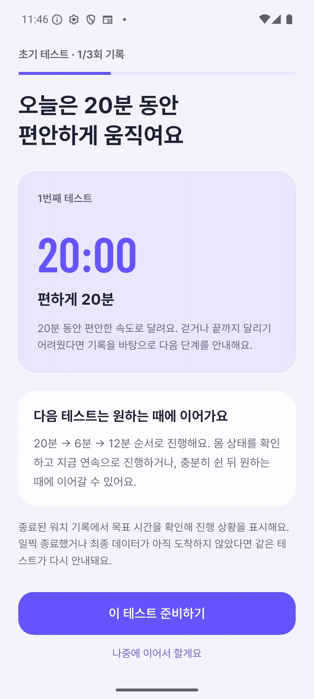
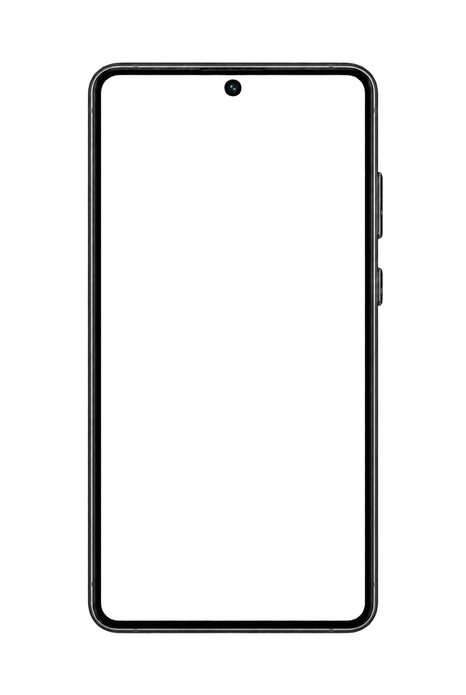
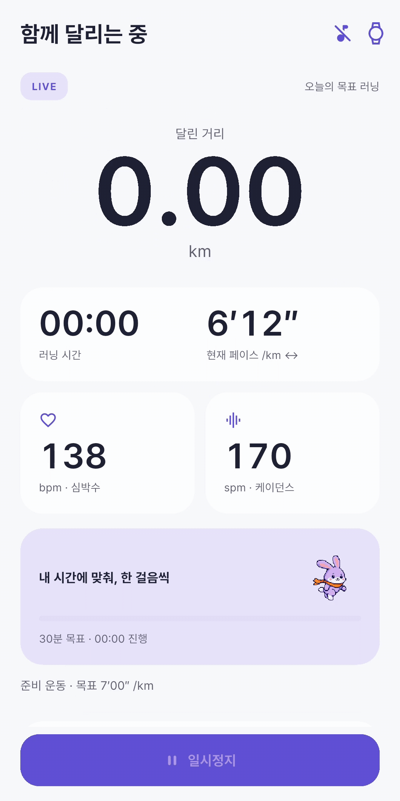
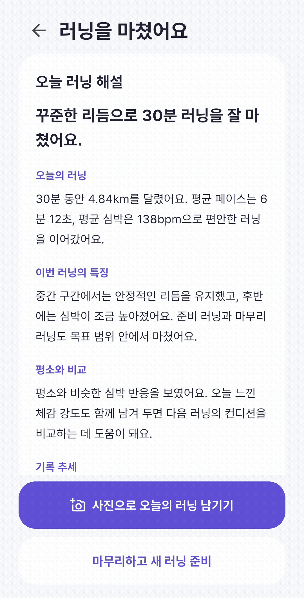
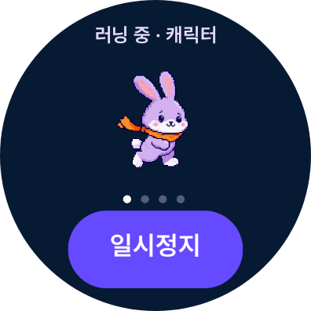
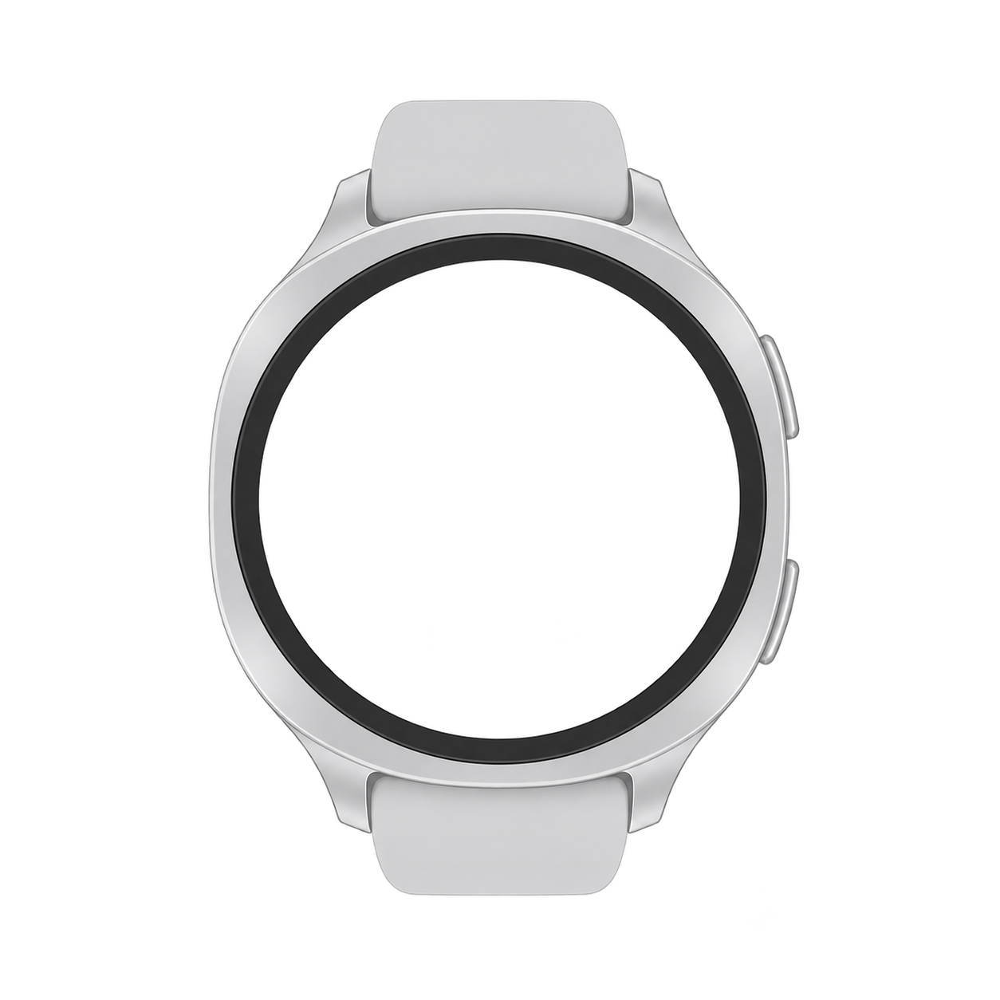

DATA INTEGRITY
연결이 끊겨도 원본을 잃지 않도록
실시간 화면 갱신과 원본 전달을 분리하고, 배치를 저장 완료 전까지 기기에 유지했습니다. 서버에서는 Batch ID와 SHA-256, DB 유니크 제약으로 같은 요청의 안전한 재전송과 충돌을 구분했습니다
- 누락 구간 계산
- 지연 배치 완료 처리
- 원본 relay 복구
CASE STUDY · 2026
BACKEND · INFRASTRUCTURE
나의 페이스를 찾아가는 러닝 서비스

PROJECT STORY
PaceOn은 Wear OS 워치와 모바일을 연결해 개인의 수행 수준에 맞는 러닝을 안내하는 서비스입니다
처음 세 번의 테스트로 러너의 상태를 파악하고, 달리는 동안에는 거리·페이스·심박을 기록합니다. 종료 후에는 구간별 흐름과 수행 결과를 분석해 다음 러닝을 위한 리포트와 제안을 제공합니다
WATCH & MOBILE EXPERIENCE
달리는 순간을 놓치지 않도록 기기마다 역할을 나눴습니다. 워치는 몸과 움직임에 가까운 기록을 수집하고, 휴대폰은 러닝 흐름을 이어갈 안내를 제공합니다






WEAR OS EXPERIENCE
러닝 중에는 캐릭터·심박·페이스·거리 화면을 좌우로 넘겨 확인합니다. 워치는 측정에 집중하고 시작과 안내의 중심은 휴대폰에 두었습니다
MY SCOPE · TEAM TECHNOLOGY
보라색 MY SCOPE는 제가 직접 구현·배포·검증한 영역이고, TEAM은 협업 과정에서 연결한 팀 기술입니다
러닝 세션 생성부터 원본 배치 수신, 누락 확인, 스트림 종료, 리포트·처방·뱃지 조회까지 공개 API 15개를 구현했습니다. DB 제약과 잠금, Redis 원자 연산으로 중복 요청과 동시성을 방어했습니다
run.raw, run.ended, run.reprocess, run.report.ready 경계를 구현하고 Kafka·HDFS·리포트 Worker·모델 서비스 사이의 계약과 장애 복구 흐름을 검증했습니다
비권한 GitLab Runner에서 Jib으로 OCI 이미지를 빌드해 Docker Hub에 발행하고, AWS Lightsail의 서비스·데이터 서버에 Docker Compose로 배포했습니다. 개발은 자동, 운영은 수동 승인으로 분리했습니다
Flutter Android 앱과 Kotlin Wear OS가 만든 러닝 경험에 맞춰 배치 재전송, 테스트 상태, 처방·리포트 API 계약을 조율했습니다. 러닝 분석 모델은 데이터·AI 담당과 연동했습니다
SYSTEM OVERVIEW
실시간 리포트는 PostgreSQL과 Worker·모델 서비스가 만들고, 원본 데이터는 Kafka에서 HDFS로 보관합니다. Spark는 누적 원본을 주간 단위로 집계합니다
DATA INTEGRITY
실시간 화면 갱신과 원본 전달을 분리하고, 배치를 저장 완료 전까지 기기에 유지했습니다. 서버에서는 Batch ID와 SHA-256, DB 유니크 제약으로 같은 요청의 안전한 재전송과 충돌을 구분했습니다
SECURE DELIVERY
비권한 Runner에서 Rootless BuildKit과 Buildah가 user namespace 제약으로 실패했습니다. privileged 권한과 Docker socket을 열지 않고 Jib으로 전환해 보안 경계를 유지했습니다
INCIDENT RECOVERY
HDFS가 0B인 상태에서 재전송부터 하지 않고 Kafka offset과 HDFS 403 응답을 먼저 확인했습니다. 조상 경로의 execute 권한만 최소 수정하고 저장 후 offset이 커밋되는 순서를 추적했습니다
RESULT & REFLECTION
이번 프로젝트에서 안정성은 오류가 없는 상태가 아니라, 중복과 부분 실패를 예상하고 상태를 확인하며 다시 이어갈 수 있는 구조라는 것을 배웠습니다. 자동 테스트 뒤에도 Postman·SQL·Kafka lag·컨테이너 로그로 실제 흐름을 끝까지 확인했습니다